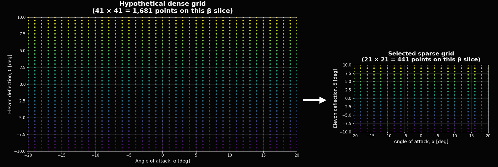
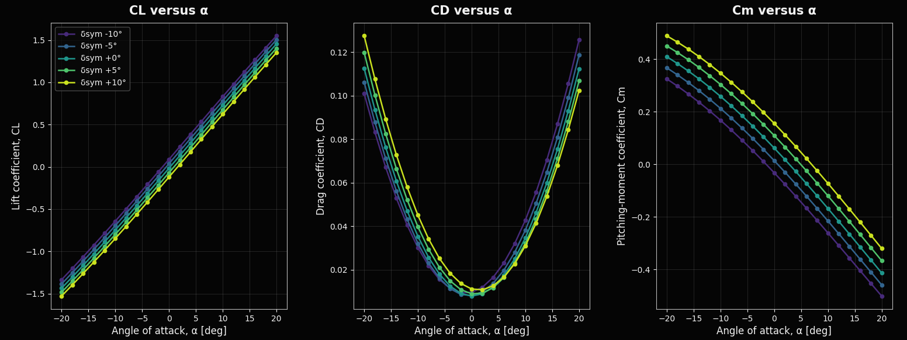
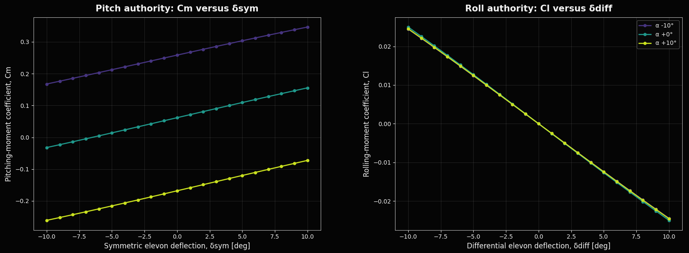
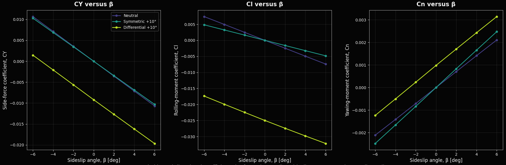

Flowchart Step 01
Sparse Aerodynamic Data Creation
This section describes how the sparse aerodynamic database was created for the surrogate-model input layer. The database was generated with VSPAERO over a fixed set of flight-attitude and elevon-control states. Each row represents one aerodynamic solve at a specified Reynolds number, angle of attack, sideslip angle, and elevon configuration. The stored outputs are the force and moment coefficients for that condition.
1. VSPAERO as the Data-Generation Tool
VSPAERO is the aerodynamic solver distributed with OpenVSP. It is used here for repeated aerodynamic coefficient evaluations of an OpenVSP aircraft geometry. The solver uses a lower-order potential-flow method, so it runs faster than a full CFD workflow. That speed is important because the database requires many cases across attitude and control variables.
The aircraft geometry and reference quantities were held fixed. Angle of attack, sideslip, and elevon inputs were varied through defined sweeps. For each case, VSPAERO returned nondimensional aerodynamic coefficients for later interpolation, surrogate training, and flight-dynamics checks.
Inputs to the VSPAERO workflow
- Aircraft geometry: the OpenVSP model and its aerodynamic representation, including lifting surfaces and elevon definitions.
- Reference quantities: reference area, reference chord, reference span, and moment reference point.
- Flow condition: Reynolds number, freestream direction, angle of attack, sideslip angle, and solver settings.
- Control inputs: symmetric and differential elevon deflections.
Outputs used in this project
The extracted outputs are integrated aerodynamic force and moment coefficients. These nondimensional values are easier to compare across conditions and easier to use in flight-dynamics and surrogate-modeling calculations than raw forces and moments.

Figure A. VSP geometry and sweep variables converted into an aerodynamic coefficient database.
Why not only use CFD?
CFD is better suited for detailed flow information such as boundary-layer behavior, shock structure, separation, viscous drag buildup, and local pressure distributions. It is also slower to set up and run for large multidimensional sweeps. The immediate goal here is a broad coefficient map over many combinations of α, β, and elevon deflection. VSPAERO provides the required coefficient data at a practical run cost.
2. Sampling Domain
The sparse dataset was generated at a fixed Reynolds number of Re = 5 × 105. The sweep covered angle of attack, sideslip angle, and elevon deflection. The intervals cover the main longitudinal, lateral-directional, and control-coupled behavior while keeping the case count manageable.
Re = 5 × 105,
α ∈ [−20°, 20°],
β ∈ [−6°, 6°],
δelevon ∈ [−10°, 10°]
- Angle of attack, α: swept from −20° to +20° using 21 points. This captures the main longitudinal change in lift, drag, and pitching moment.
- Sideslip angle, β: swept from −6° to +6° using 7 points. This captures yawed-flow effects.
- Elevon deflections: swept from −10° to +10° using 21 points. These inputs change the loading of the trailing-edge control surfaces.
- Control mixing: symmetric deflection moves both elevons together. Differential deflection moves the elevons in opposite directions.
Symmetric elevon deflection is mainly associated with pitch control because both surfaces change aft-wing loading in the same direction. It affects CL, CD, and Cm. Differential elevon deflection is mainly associated with roll control because the left and right sides receive different trailing-edge deflections. It affects Cl and can also affect CY and Cn through coupling.
The dataset is sparse, so it does not include every continuous flight state. It provides structured anchor points across the envelope. The surrogate model uses those anchor points to estimate coefficients at unsampled combinations of attitude and control input.

Figure 1. Aerodynamic sweep domain used for the sparse data input.
3. Data Inputs, Constraints, and Preparation
The sparse aerodynamic database is a table of input conditions paired with coefficient outputs. The input side defines the aircraft state and control state for each VSPAERO case. In this project, each sample is identified by angle of attack, sideslip angle, and elevon configuration.
3.1 Inputs: sampled aerodynamic states
The primary inputs are sampled points in the aerodynamic and control space. A row can contain α, β, symmetric elevon component, and differential elevon component. The same row also contains the VSPAERO coefficient outputs for that state.
The input values come from a defined sweep rather than arbitrary choices. The α samples describe pitch attitude relative to the freestream. The β samples describe yawed flow. The elevon samples describe pitch-like and roll-like control response. This gives the surrogate model a direct mapping from flight/control inputs to aerodynamic outputs.

Figure 2. Sparse database format. Each sampled input state maps to aerodynamic coefficient outputs.
3.2 Constraints: why the dataset is sparse
The database is sparse because the aerodynamic response surface is multidimensional. A dense grid over Reynolds number, angle of attack, sideslip, left elevon deflection, and right elevon deflection would require a large number of aerodynamic solves. The cost grows further if the workflow is repeated for geometry changes, solver setting changes, or validation runs.
Sparsity also reflects practical limits in data generation. Some parts of the envelope matter more than others, and some combinations are less relevant for the intended operating range. The sweep captures the main trends without creating a brute-force database. The surrogate model then estimates the response between the sampled points.
The surrogate does not create new high-fidelity physics on its own. It learns from a limited set of aerodynamic anchor points. Its accuracy depends on the quality, coverage, and consistency of those points, along with the smoothness of the underlying aerodynamic trends.

Figure 3. Sparse sampling strategy compared with a dense aerodynamic database.
3.3 Preparation: converting VSPAERO outputs into surrogate-ready data
After the VSPAERO sweeps are complete, the raw outputs are organized into a consistent dataset. This step collects the coefficient outputs, associates them with the correct input condition, and formats the results into a table that the surrogate model can read.
Preparation includes checking run completion, verifying sign conventions, confirming symmetric and differential elevon definitions, and checking that each coefficient is paired with the correct input state. Failed cases, duplicated points, missing values, and inconsistent labels are removed or flagged before training.
Left and right elevon deflections can also be converted into symmetric and differential components. These variables match the aircraft control structure more directly: symmetric deflection maps to pitch behavior, and differential deflection maps to roll behavior.
4. Aerodynamic Coefficient Outputs
For each VSPAERO run, six nondimensional aerodynamic coefficients were extracted:
{ CL, CD, CY, Cl, Cm, Cn }
These coefficients describe total aerodynamic forces and moments. CL, CD, and CY describe translational force components. Cl, Cm, and Cn describe rolling, pitching, and yawing moments.
4.1 Longitudinal coefficients: lift, drag, and pitching moment
CL, CD, and Cm describe the main longitudinal response. CL tracks lift production as angle of attack changes. CD tracks drag at each flight and control state. Cm tracks pitching moment for trim and pitch-stability checks.

Figure 4. Longitudinal coefficient trends across the angle-of-attack sweep.
Figure 4 is a data check for the longitudinal part of the sweep. It shows lift growth, drag buildup, and the change in pitching moment caused by symmetric elevon input. The same plot also identifies regions where the response becomes less linear or more sensitive to control deflection.
4.2 Control effectiveness: symmetric and differential elevon behavior
The elevon sweep measures how the aircraft responds to control inputs. Symmetric elevon deflection changes the pitch-related response, especially Cm. Differential elevon deflection changes the roll-related response, especially Cl.

Figure 5. Elevon control-deflection effectiveness.
Figure 5 shows the control slopes for pitch and roll. A clear change in Cm with symmetric deflection indicates pitch authority. A clear change in Cl with differential deflection indicates roll authority. Curvature in either plot indicates that the surrogate needs to represent nonlinear control behavior.
4.3 Lateral-directional coefficients: side force, roll moment, and yaw moment
CY, Cl, and Cn describe lateral-directional behavior. These coefficients are most important in sideslip. CY describes side force, Cl describes rolling moment, and Cn describes yawing moment.

Figure 6. Lateral-directional coefficient trends versus sideslip.
Figure 6 connects the β sweep to the coefficients most affected by yawed flow. It compares neutral controls with representative symmetric and differential control cases. This separates pure sideslip response from control-induced coupling in side force, roll moment, and yaw moment.
4.4 Summary of coefficient roles
| Coefficient | Name | Aircraft relevance |
|---|---|---|
| CL | Lift coefficient | Represents nondimensional lift. It shows how lift changes with flight condition and control input. Variation with α is a main longitudinal trend. |
| CD | Drag coefficient | Represents nondimensional drag. It indicates the aerodynamic cost of a state or control input, including drag growth at higher angles of attack. |
| CY | Side-force coefficient | Represents lateral force from sideslip or asymmetric control effects. It is used for crosswind and lateral-directional response checks. |
| Cl | Rolling-moment coefficient | Represents moment about the aircraft body x-axis. It is the main output for differential elevon roll authority. |
| Cm | Pitching-moment coefficient | Represents moment about the aircraft body y-axis. It is used for trim, pitch stability, and symmetric elevon effectiveness. |
| Cn | Yawing-moment coefficient | Represents moment about the aircraft body z-axis. It is used for directional response and yaw-roll coupling checks. |
Figures 4 through 6 move from baseline longitudinal response to control effectiveness and then to lateral-directional coupling. This order gives a direct check of the aerodynamic database before it is used in the surrogate stage.
5. Purpose in the Surrogate Workflow
The VSPAERO results form the sparse input database for the surrogate prediction stage. The workflow uses sampled aerodynamic states instead of directly evaluating the full continuous space. The surrogate then estimates aerodynamic coefficients at unsampled combinations of angle of attack, sideslip, and elevon deflection.
This approach reduces the number of direct aerodynamic analyses while preserving the main trends across the operating envelope. The result is a structured dataset that is small enough to generate and large enough to support interpolation and model training.
Next step in the flowchart Surrogate Data Prediction →The next stage uses the sparse VSPAERO coefficient database to estimate aerodynamic behavior at unsampled flight and control conditions.